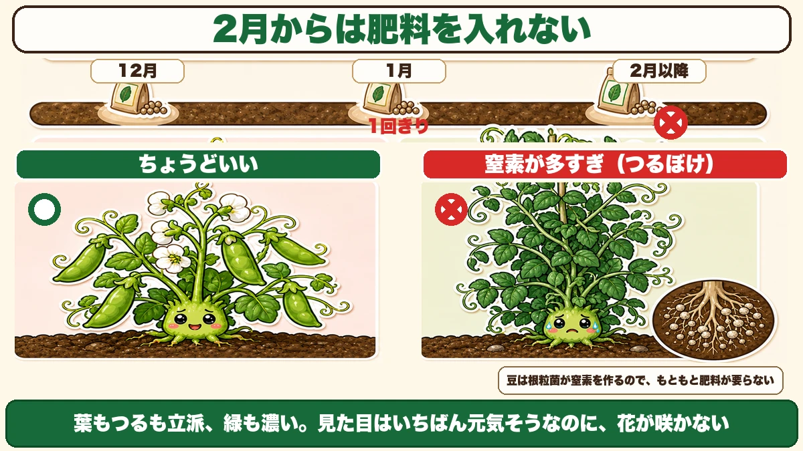
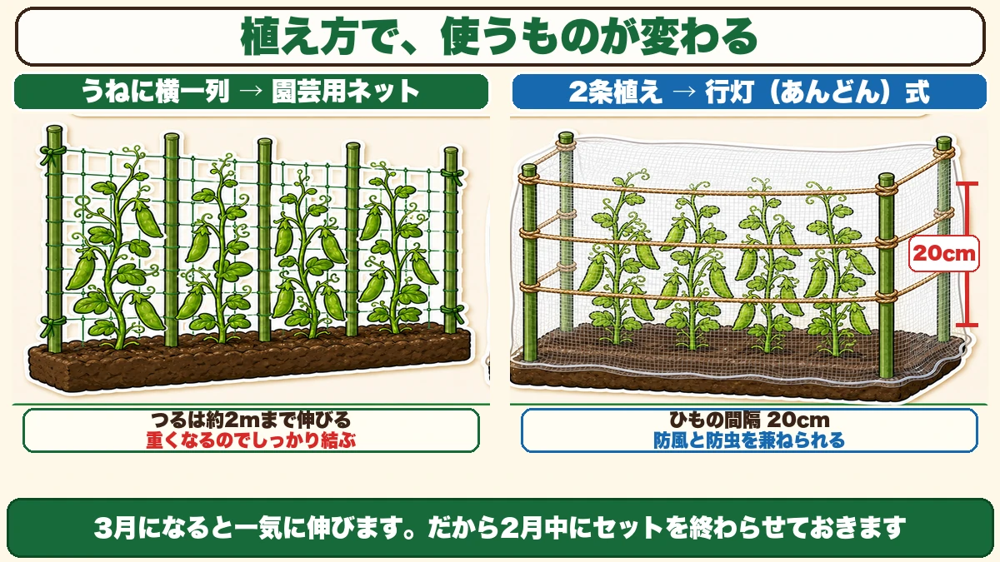
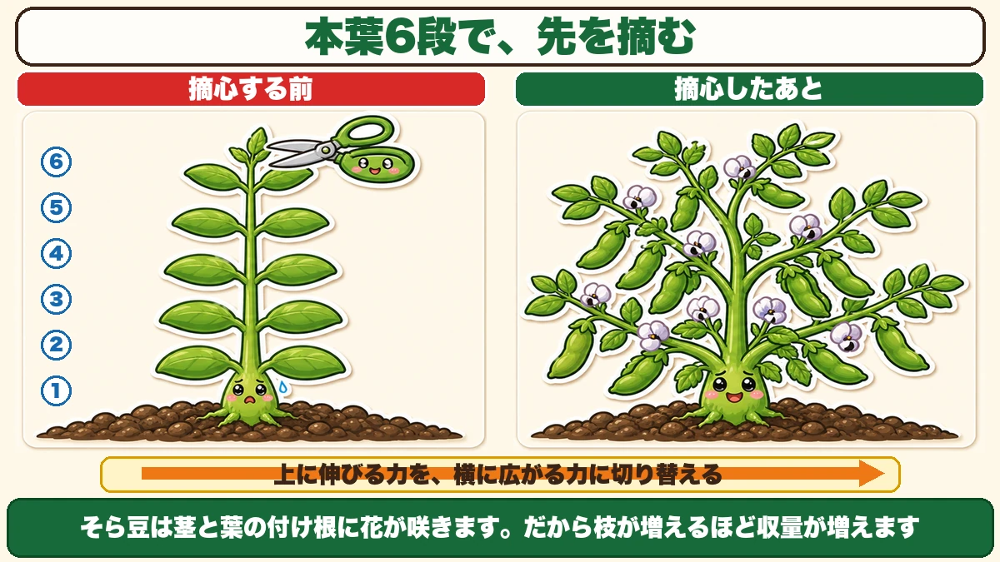
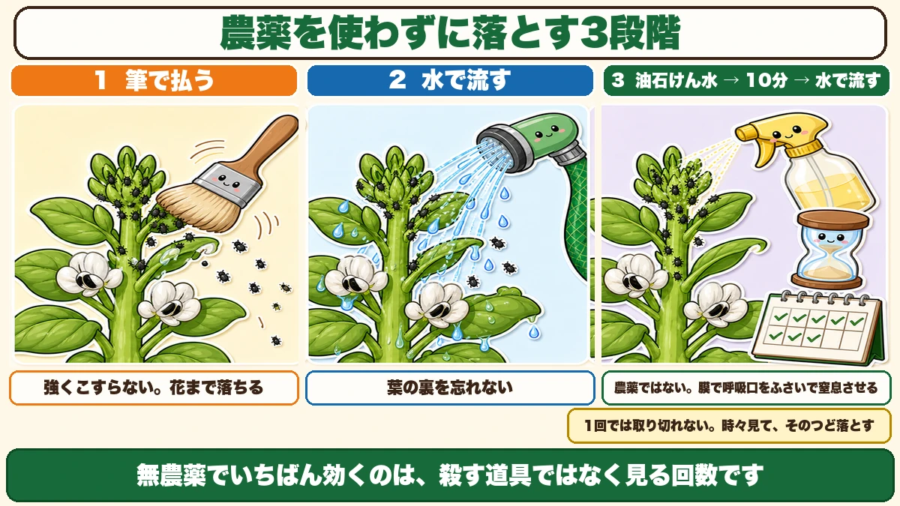

2月からは肥料を入れません 支柱は3月では間に合わない

🗨️「つるは伸びるのに、実がつかない」
🗨️「支柱を立てる前に、倒れてしまった」
🗨️「そら豆に黒いのがびっしりついていた」
どうも、8150（えいこう）です🌱 家庭菜園歴8年、理科の教員免許を持っていて、有機・無農薬で野菜を育てています。
2月の後半になると、豆たちが目を覚まします。
冬のあいだ、スナップエンドウもそら豆もほとんど動きません。10cmくらいのまま、じっと寒さに耐えています。それが2月の後半、急に伸びはじめます。
長い休眠が終わったんです。
ここからは、こまめな世話が必要になります。そして最初にやるべきなのは、意外なことです。
先に、この記事でいちばん言いたいことを言っておきます。
★2月からは、肥料を入れません。
そして、★支柱は2月中に立ててください。3月では間に合いません☺️

①肥料は、もう入れない
つるぼけという失敗
冬越しした株を見ていると、「思ったより小さいな」と不安になります。そして肥料をやりたくなります。
やらないでください。
★窒素を与えると、つるばかり伸びて実がつかなくなります。これをつるぼけと言います。
葉もつるも立派、緑も濃い。見た目はいちばん元気そうなのに、花が咲かない。咲いても実にならない。畑でいちばん残念な光景です。
追肥のスケジュール
前に冬越しの話をしたとき、追肥は1月に1回だけ、とお伝えしました。その続きです。
- 12月ごろ … 冬に向けての追肥
- ★1月 … 株間に少しだけ、1回きり
- ★2月以降 … 入れない
これで終わりです。豆は自分で窒素を作れる野菜なので、そもそも肥料をあまり必要としません。根に住んでいる根粒菌が、空気中の窒素を取りこんで株に渡してくれます。
★人間が窒素を足すと、この関係が余計なものになります。
それでも心配なときは
冬越しに失敗して、株がほとんど残らなかった。そういう年もあります。
そのときは、★春に苗を買うという手があります。
3月ごろになると、ホームセンターにスナップエンドウの苗が並びます。畑で冬を越した株にくらべると収穫量は落ちますが、★十分に楽しめる量は穫れます。
「今年はもうだめだ」とあきらめる前に、苗コーナーを見てみてください。私も一度、寒波で全滅させた年にこれで立て直しました。
②支柱は、2月中に立てる
★3月では間に合わない理由
スナップエンドウのつるは、★約2mまで伸びます。
思っているよりずっと高いです。60cmくらいの支柱で足りるだろうと思っていると、あっという間に越えていきます。
そして問題はスピードです。★3月になって暖かくなると、一気に伸びます。
つるが伸びきってから支柱を立てようとすると、絡まったつるをほどきながらの作業になります。つるは繊細で、無理に引っぱると折れます。
★だから、2月中にセットを終わらせておく。伸びる場所を先に用意しておくわけです。

うねに横一列なら、ネット
植え方によって、使うものが変わります。
うねに横一列で植えているなら、★園芸用のネットが向いています。
支柱を等間隔に立てて、そこにネットを張る。つるは勝手にネットに絡んでいきます。
ひとつだけ注意点があります。★つるが絡んで葉が茂ると、ネットはかなり重くなります。
風の強い日に、重さと風圧でネットごと倒れることがあります。私は一度これをやりました。支柱とネットは、しっかり結んでください。結び目は多すぎるくらいでちょうどいいです。
2条植えなら、行灯（あんどん）式
うねに2列で植えているなら、★行灯式がおすすめです。
行灯というのは、昔の照明のことです。四角い枠に紙を張ってあるあれですね。それと同じ形を作ります。
- 株のまわり、四隅に★支柱を4本立てる
- 麻ひもを★20cm間隔で、4段まわす
- その外側に、★防虫ネットをたたんだものを巻きつける
麻ひもの4段がつるの足場になり、防虫ネットが風よけになります。
風よけが効く理由
2月3月は、まだ風が強い時期です。
伸びはじめたつるは細くてやわらかいので、風で揺すられ続けると根元が傷みます。★根が浮くと、そこから寒さが入ります。
防虫ネットをたたんで巻くだけで、風は弱まります。目が粗いので完全には防げませんが、それでいいんです。★完全に囲むと、今度は蒸れます。
株元の風通しをよくする
もうひとつ、2月にやっておきたいことがあります。
★弱い脇芽と、枯れかかった葉を取り除くことです。
春に向かって脇芽が増えてくると、株元が密集していきます。そうすると、風が通らなくなる。★風通しの悪さは、そのまま病害虫の原因になります。
細くて元気のない脇芽、黄色くなった下葉。この2つを摘んでおくだけで、株元が明るくなります。
そして雑草も、小さいうちに取ってください。★背の高い草が影を作ると、そこが虫の住みかになります。
③そら豆は「摘心」で収量が増える
先を摘むと、増える
そら豆には、スナップエンドウにはない作業があります。摘心です。
★主枝の先端、いちばん上の成長点を、指で摘み取ります。
「せっかく伸びているのに、切ってしまうの？」と思いますよね。私も最初は抵抗がありました。でもこれをすると、収穫量が増えます。

なぜ増えるのか
そら豆は、★茎と葉の付け根に花が咲いて、そこに莢がつきます。
ということは、★枝の数が多いほど、花のつく場所が増えるということです。
先端の成長点は、上へ伸びる指令を出しています。ここを摘むと、その指令が止まって、代わりに★脇芽がどんどん出てきます。1本だった枝が、5本にも6本にもなる。
★上に伸びる力を、横に広がる力に切り替える作業です。
タイミングは「本葉6段」
いつ摘むかが大事です。
★2月中旬ごろ、伸びはじめて本葉が6段くらいになったときです。
段というのは、葉が左右に出ている一組を1段と数えます。下から6組ぶん数えて、その上の先端を摘みます。
早すぎると株が弱りますし、遅すぎると脇芽が伸びる時間が足りません。2月中旬という時期は、覚えておく価値があります。
枯れた葉は取る
冬を越したそら豆は、下のほうの葉が枯れていることがあります。
★多少の枯れなら、その後の成長に影響しません。放っておいて大丈夫です。
ただし、★完全に枯れてしまった葉は取り除いてください。株元に残っていると、そこから病気が広がります。
④アブラムシは、農薬なしで落とせる
そら豆に、必ず来る
そら豆を育てていると、必ず出会います。アブラムシです。
★成長点のあたりに、黒いものがびっしりつきます。
初めて見たときは、正直ぞっとしました。ただ、これは避けようがありません。そら豆は春に一気に伸びる野菜で、そのやわらかい先端がアブラムシにとってごちそうなんです。
たくさんつくと、莢の数が減ります。だから見つけたら落とします。
★3段階で落とす
私がやっているのは、この3つです。

★1. 筆で払う
やわらかい筆か刷毛で、軽く払い落とします。強くこすらないでください。★花まで落としてしまうと意味がありません。
これで大半は落ちます。ただし、全部は取れません。
★2. 水で流す
払い落としたものが、葉の上や下のほうに残っています。ホースの水で全体を流します。
★葉の裏を忘れないでください。アブラムシは裏側にいることが多いです。
★3. 油石けん水をかけて、10分置く
成長点のあたりは、こみいっていて筆が入りません。ここには油石けん水をスプレーします。
10分ほど置いてから、水で流します。
★これは農薬ではありません。石けんの膜がアブラムシの呼吸口をふさいで、窒息させるしくみです。だから無農薬の畑でも使えます。
★1回で終わりにしない
いちばん大事なのはここです。
★アブラムシを、一度で全部取り切ることはできません。
必ず取り残しがあって、そこからまた増えます。だから「時々見て、そのつど落とす」を繰り返します。
私は水やりのついでに、成長点だけのぞく習慣にしています。10秒で済みます。この10秒があるかないかで、収穫量が変わります。
そもそも来させない
いちばん楽なのは、最初から防虫ネットをかけておくことです。
行灯式の防風ネットが、そのまま防虫ネットになります。★防風と防虫を、ひとつの道具で兼ねられます。
完全には防げませんが、ネットがあるのとないのとでは、つく量が全然違います。
2月にやることをまとめると
この記事の要点
- 2月後半、豆は★長い休眠から目覚めて一気に伸びはじめる
- ★2月以降は追肥をしない。窒素を入れると★つるぼけして実がつかない
- 豆は根粒菌が窒素を作るので、★もともと肥料をあまり必要としない
- 冬越しに失敗したら★春に苗を買える。収量は落ちるが十分穫れる
- スナップエンドウのつるは★約2mまで伸びる
- ★支柱は2月中に。3月は一気に伸びるので間に合わない
- 横一列なら★園芸用ネット（重くなるのでしっかり結ぶ）
- 2条植えなら★行灯式（支柱4本＋麻ひも20cm間隔で4段＋防虫ネットで防風）
- ★弱い脇芽と枯れ葉を取って株元の風通しをよくする
- そら豆は★2月中旬・本葉6段で摘心する
- ★茎と葉の付け根に花が咲くので、枝が増えるほど収量が増える
- アブラムシは★筆→水→油石けん10分の3段階で落とせる
- ★油石けんは農薬ではない。膜で呼吸口をふさいで窒息させる
- ★1回で終わりにしない。時々見て、そのつど落とす
全部やろうとしなくて大丈夫です。まずは支柱だけ、今週末に立ててみてください。それだけで、3月からの慌ただしさが半分になります
次回は、春の葉物と根菜の話。2月から3月にまける野菜と、その防寒のしかたをお話しします🥬
ここまで読んでくださって、ありがとうございました。
支柱150cm
スナップエンドウのつるは約2mまで伸びます。60cmの支柱では足りません。そして3月になると一気に伸びるので、2月中に立ててください。つるが伸びきってから立てると、絡まったつるをほどく作業になります。
![[商品価格に関しましては、リンクが作成された時点と現時点で情報が変更されている場合がございます。]](https://hbb.afl.rakuten.co.jp/hgb/56d221a0.da732c49.56d221a1.b57a6709/?me_id=1230952&item_id=10017113&pc=https%3A%2F%2Fthumbnail.image.rakuten.co.jp%2F%400_mall%2Fnou-nou%2Fcabinet%2F5010356000109-01.jpg%3F_ex%3D240x240&s=240x240&t=picttext "[商品価格に関しましては、リンクが作成された時点と現時点で情報が変更されている場合がございます。]")

麻ひも
行灯式に組むときに使います。四隅に支柱を4本立てて、麻ひもを20cm間隔で4段まわす。この4段が、つるの足場になります。天然素材なので、片づけのときそのまま土に還せます。
![[商品価格に関しましては、リンクが作成された時点と現時点で情報が変更されている場合がございます。]](https://hbb.afl.rakuten.co.jp/hgb/56bc2b48.a5f55627.56bc2b49.c4ff0d7c/?me_id=1372205&item_id=10005292&pc=https%3A%2F%2Fthumbnail.image.rakuten.co.jp%2F%400_mall%2Faudiofuntech%2Fcabinet%2Fproducts%2Fetc%2Fetc06%2F7052-1.jpg%3F_ex%3D240x240&s=240x240&t=picttext "[商品価格に関しましては、リンクが作成された時点と現時点で情報が変更されている場合がございます。]")
防虫ネット
行灯の外側に巻いて風よけにします。2月3月はまだ風が強く、伸びはじめたつるが揺すられると根元が傷みます。目が粗いので完全には防げませんが、それでいい。完全に囲むと今度は蒸れます。そら豆のアブラムシ対策にもなります。
![[商品価格に関しましては、リンクが作成された時点と現時点で情報が変更されている場合がございます。]](https://hbb.afl.rakuten.co.jp/hgb/56bc205d.0066fedc.56bc205e.af56d163/?me_id=1260467&item_id=10000299&pc=https%3A%2F%2Fthumbnail.image.rakuten.co.jp%2F%400_mall%2Fmarsol-morishita%2Fcabinet%2Fshouhinn%2Fbouchuu%2Fimgrc0090950099.jpg%3F_ex%3D240x240&s=240x240&t=picttext "[商品価格に関しましては、リンクが作成された時点と現時点で情報が変更されている場合がございます。]")
スナップエンドウのタネ（つるなし）
冬越しに失敗した年の立て直し用です。春に苗を買う手もありますが、つるなしなら支柱4本で済みます。畑で冬を越した株より収量は落ちますが、十分に楽しめる量は穫れます。
![[商品価格に関しましては、リンクが作成された時点と現時点で情報が変更されている場合がございます。]](https://hbb.afl.rakuten.co.jp/hgb/552615f0.9cc2855e.552615f1.776f7de9/?me_id=1251188&item_id=10000610&pc=https%3A%2F%2Fthumbnail.image.rakuten.co.jp%2F%400_mall%2Fyonezawa%2Fcabinet%2Ftane01%2F10mame%2Fhorunsnack.jpg%3F_ex%3D240x240&s=240x240&t=picttext "[商品価格に関しましては、リンクが作成された時点と現時点で情報が変更されている場合がございます。]")
あわせて読みたい